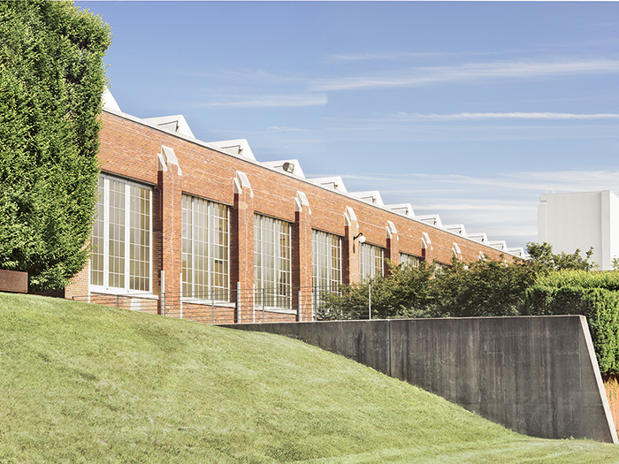
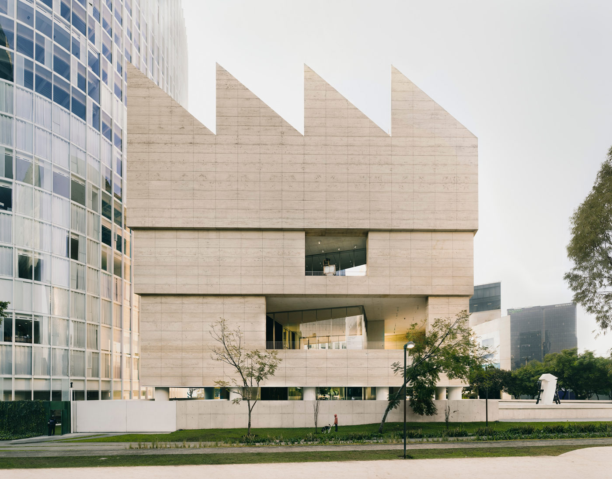
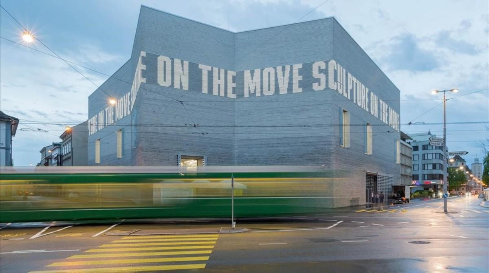
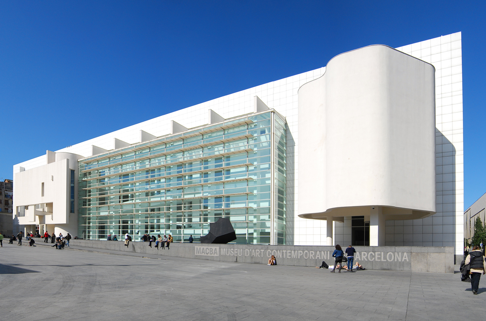
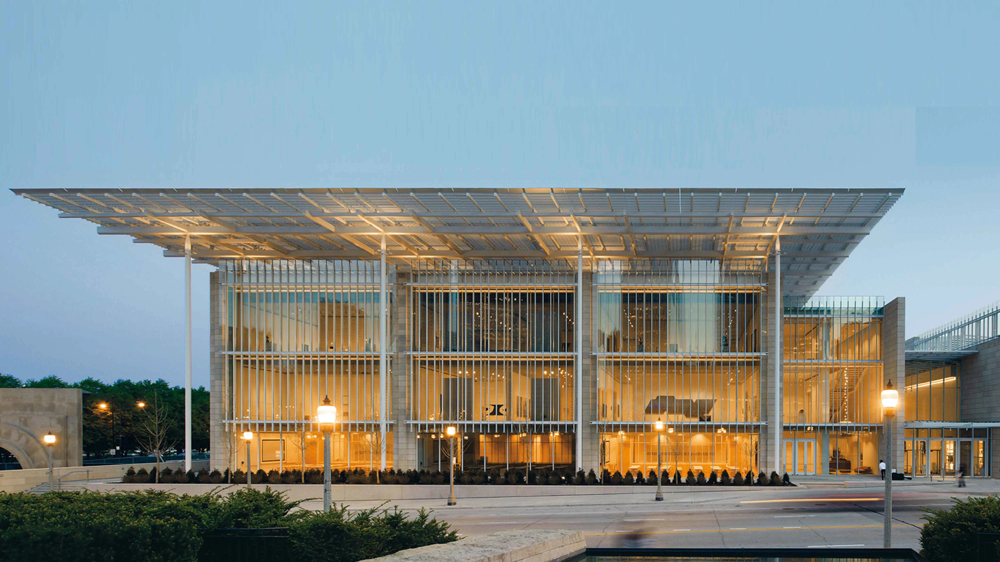
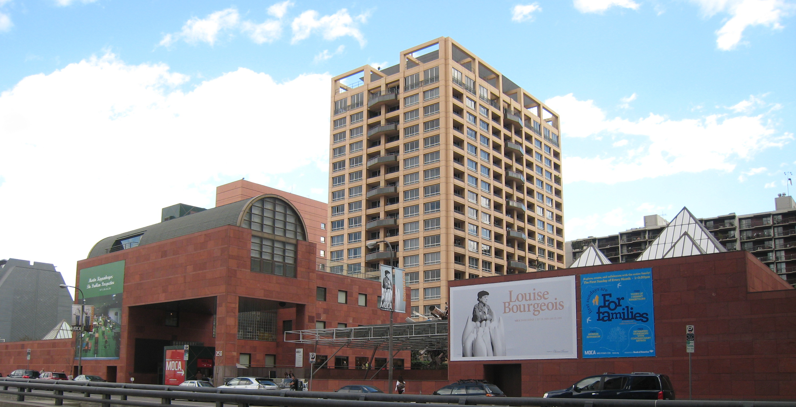
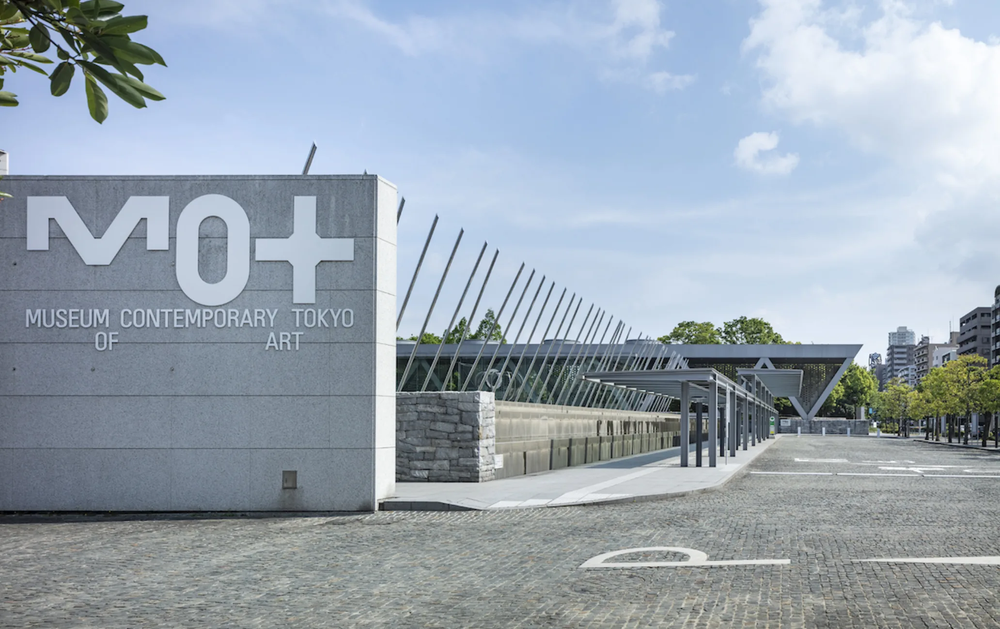
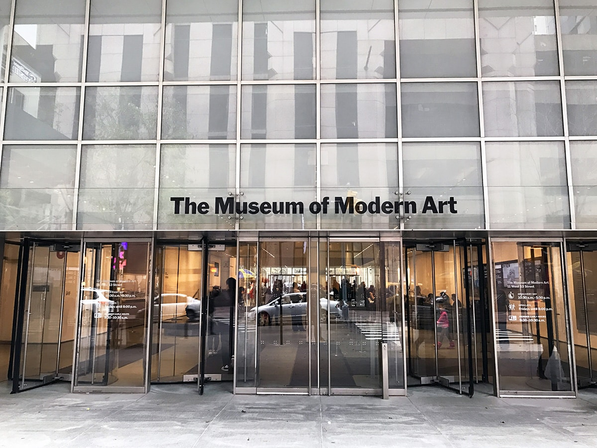

Dia:Beacon - Beacon, Nueva York, Estados Unidos

Fundación Jumex Arte Contemporáneo - Ciudad de México, México

Fundación de Arte Kunstmuseum - Basilea, Suiza

Museo de Arte Contemporáneo de Barcelona (MACBA) - Barcelona, España

Museo de Arte Contemporáneo de Chicago - Chicago, Estados Unidos

Museo de Arte Contemporáneo de Los Ángeles (MOCA) - Los Ángeles, Estados Unidos

Museo de Arte Contemporáneo de Tokio (MOT) - Tokio, Japón

Museo de Arte Moderno (MoMA) - Nueva York, Estados Unidos

Museo Guggenheim - Bilbao, España

Museo de Arte Moderno de Buenos Aires (MAMBA) - Buenos Aires, Argentina